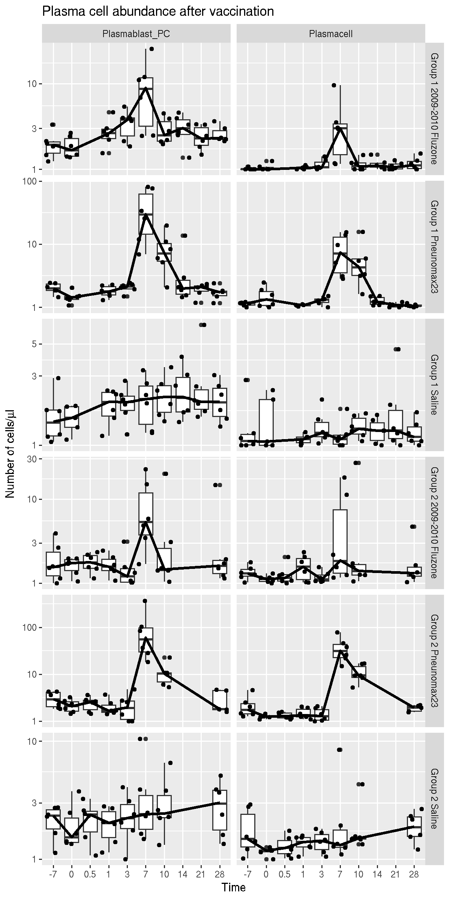

vignettes/SDY180.Rmd
SDY180.RmdThis report investigate the abundance of plasmablast (and other B cell subsets) over time after vaccination with Pneumovax, Fluzone, or no vaccination (saline control group). It can be seen on the figure below that the plasmablast subset peaks at day 7 in both vaccine groups, with a stronger and more durable response with Pneumovax. As expected, there is no clear peak in the saline group. These results are similar to those reported in Figure 6B of Obermoser et al. (2013) published as part of the original study. This vignette reproduces a report available on the ImmuneSpace portal using ImmPortR.
library(ImmPortR) #> By retreiving data from ImmPort via ImmPortR, you confirm that you have read and accept all the terms and conditions without limitation of the User Agreement at http://www.immport.org/agreement library(ggplot2) library(dplyr) #> #> Attaching package: 'dplyr' #> The following objects are masked from 'package:stats': #> #> filter, lag #> The following objects are masked from 'package:base': #> #> intersect, setdiff, setequal, union
fcsAnalyzed <- query_dataset("SDY180", "fcsAnalyzed")
fcsAnalyzed <- fcsAnalyzed %>% filter(grepl("Plasma", populationNameReported)) %>% mutate( cohort = gsub("Study g", "G", armName), populationStatisticReported = as.double(populationStatisticReported), studyTimeCollected = as.factor(studyTimeCollected), populationStatisticReported = as.double(populationStatisticReported) )
ggplot(fcsAnalyzed, aes(x = studyTimeCollected, y = populationStatisticReported + 1)) + geom_boxplot() + geom_jitter() + scale_y_log10() + facet_grid(cohort ~ populationNameReported, scale = "free") + xlab("Time") + ylab(expression(paste("Number of cells/", mu, "l"))) + geom_line(data = fcsAnalyzedMedian, aes( x = studyTimeCollected, y = medianCellReported, group = 1 ), color = "black", size = 1.2) + labs(title = "Plasma cell abundance after vaccination") #> Warning: Removed 4 rows containing non-finite values (stat_boxplot). #> Warning: Removed 4 rows containing missing values (geom_point).
